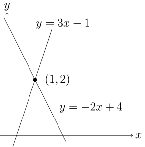
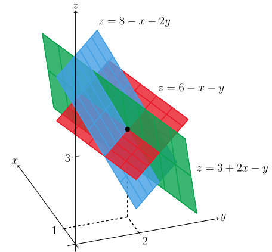

Table of Contents
Linear Algebra

NARROW DISPLAY WARNING
You are most likely using a tablet or mobile device in portrait orientation. This website is best viewed using a typical computer screen with the browser window maximized.
Viewing this website in portrait orientation can cause problems with equations being longer than the screen width (you can scroll to the right), images being poorly sized, and the font size of maths text being much smaller than regular text. If your only option is a tablet or mobile device, your viewing experience will be better if you view this website in landscape orientation. You might need to refresh the page to fix any problems after rotating.
Linear algebra is all about solving systems of linear equations. The "linear" part means equations of lines, equations of planes, and so on. There are no terms like $x^{2}$ or $\sin(y)$ or $e^{z}$ or any other nonlinear terms. The only equations allowed are a number times $x$ plus a number times $y$ equals a number, or a number times $x$ plus a number times $y$ plus a number times $z$ equals a number, and so on with any number of variables. The "system" part means a set of linear equations, all of which need to be solved by the same $(x,y)$ pair in two dimensions, solved by the same $(x,y,z)$ triple in three dimensions, and so on for higher dimensions.
Assuming there is a solution, solve the system of linear equations by setting different equations equal to each other and solving for the variables one at a time.
\begin{align} y &= 3x-1 \\ y &= -2x+4 \end{align} \begin{equation} 3x-1 = y = -2x+4 \end{equation}Solving for $x$, then using the value for $x$ in either of the top two equations gives the solution as,
\begin{equation} (x,y) = (1,2) \end{equation}Assuming there is a solution, solve the system of linear equations by setting different equations equal to each other and solving for the variables one at a time.
\begin{align} z &= 6-x-y \\ z &= 3+2x-y \\ z &= 8-x-2y \end{align}Setting the first equation equal to the second equation,
\begin{equation} 6-x-y = z = 3+2x-y \end{equation}Adding $y$ to each side leaves only $x$.
\begin{equation} 6-x = 3+2x \end{equation}This equation has solution $x=1$.
Next, setting the first equation equal to the third equation to solve for $y$ and $z$,
\begin{equation} 6-x-y = 8-x-2y \end{equation}The value of $x$ is known, so $y$ can be solved for.
\begin{equation} 6-1-y = 8-1-2y \end{equation}This equation has solution $y=2$.
To solve for $z$, plug the values of $x$ and $y$ into any of the equation, giving the solution.
\begin{equation} (x,y,z) = (1,2,3) \end{equation}Solving the above systems of equations is the same as solving for intersections of the lines in the Example 1 and intersections of planes in Example 2.
Example 1 is the unique intersection of two lines.
Example 2 is the unique intersection of three planes.
The way these equations are written,
\begin{align} y &= 3x-1 \\ y &= -2x+4 \end{align}Horizontal lines, like $y = 3$, but there's not a good way to represent vertical lines, like $x = -2$.
Writing the equations with all the variables on the LHS and the constant on the RHS fixes that limitation.
\begin{align} -3x + y &= -1 \\ 2x + y &= 4 \end{align}The equations are also easier to solve in this form by directly adding equations to each other and storing the results in one of the equation rows.
\begin{equation} \text{Eqn }2 - \text{Eqn }1 \rightarrow \text{Eqn }2 \end{equation} \begin{align} -3x + y &= -1 \\ 5x + 0y &= 5 \end{align}By adding the equations together to cancel out the $y$ term, solving for $x$ in the new $\text{Eqn }2$ is much easier. After finding $x$, the value for $x$ can be plugged into $\text{Eqn }1$ to solve for $y$.
Similarly to the previous example, the way these equations are written does not allow representing vertical planes where the coefficient on $z$ is $0$.
\begin{align} z &= 6-x-y \\ z &= 3+2x-y \\ z &= 8-x-2y \end{align}Writing the equations with all the variables on the LHS and the constant on the RHS fixes that limitation.
\begin{align} x+y+z &= 6 \\ -2x+y+z &= 3 \\ x+2y+z &= 8 \end{align}The idea is to add equations together to eliminate variables in other equations. This eliminates $x$ from the bottom two equations.
\begin{align} \text{Eqn }2 - 2(\text{Eqn }1) &\rightarrow \text{Eqn }2 \\ \text{Eqn }3 - \text{Eqn }1 &\rightarrow \text{Eqn }3 \end{align} \begin{align} x+y+z &= 6 \\ 0x+3y+3z &= 15 \\ 0x+1y+0z &= 2 \end{align}It's less confusing, especially when working with even more equations and variables, to exchange rows sometimes.
\begin{equation} \text{Exchange Eqn }2 \text{ and Eqn }3 \end{equation} \begin{align} x+y+z &= 6 \\ 0x+1y+0z &= 2 \\ 0x+3y+3z &= 15 \end{align}Now we can eliminate $y$ from the bottom equation.
\begin{equation} \text{Eqn }3 - 3(\text{Eqn }2) \rightarrow \text{Eqn }3 \end{equation} \begin{align} x+y+z &= 6 \\ 0x+1y+0z &= 2 \\ 0x+0y+3z &= 9 \end{align}From here, the third equation can be solved, then the second (we didn't need the value of $z$ in this case), and then the first equation.
Working with systems of equations like this is a little clunky. A more convenient notation is augmented matrix equations, which is more compact, saves a lot of writing, and keeps things lined up.
For Example 1, the matrix equation and augmented matrix equations are,
\begin{align} -3x + y &= -1 \\ 2x + y &= 4 \end{align} \begin{equation} \begin{bmatrix} -3 & 1 \\ 2 & 1 \end{bmatrix}\begin{bmatrix} x \\ y \end{bmatrix} = \begin{bmatrix} -1 \\ 4 \end{bmatrix} \end{equation} \begin{equation} \left[ \begin{matrix} -3 & 1 \\ 2 & 1 \end{matrix} \left| \begin{matrix} -1 \\ 4 \end{matrix} \right. \right] \end{equation}The first and second row are the first and second equations. The first and second column is the coefficients on $x$ and $y$ in each equation, the right column is the RHS constants, and the vertical bar is like an equals sign. Very compact!
Now it's not so much writing to add rows together to eliminate variables.
\begin{equation} \left[ \begin{matrix} -3 & 1 \\ 2 & 1 \end{matrix} \left| \begin{matrix} -1 \\ 4 \end{matrix} \right. \right] \end{equation} \begin{equation} \frac{2}{3}R_{1}+R_{2} \rightarrow R_{2} \quad \left[ \begin{matrix} -3 & 1 \\ 0 & 5/3 \end{matrix} \left| \begin{matrix} -1 \\ 10/3 \end{matrix} \right. \right] \end{equation}For Example 2, the augmented matrix equation can be solved fairly quickly.
\begin{align} x+y+z &= 6 \\ -2x+y+z &= 3 \\ x+2y+z &= 8 \end{align} \begin{equation} \begin{bmatrix} 1 & 1 & 1 \\ -2 & 1 & 1 \\ 1 & 2 & 1 \end{bmatrix}\begin{bmatrix} x \\ y \\ z \end{bmatrix} = \begin{bmatrix} 6 \\ 3 \\ 8 \end{bmatrix} \end{equation} \begin{equation} \left[ \begin{matrix} 1 & 1 & 1 \\ -2 & 1 & 1 \\ 1 & 2 & 1 \end{matrix} \left| \begin{matrix} 6 \\ 3 \\ 8 \end{matrix} \right. \right] \end{equation} \begin{equation} (-2)R_{1}+R_{2} \rightarrow R_{2} \quad \left[ \begin{matrix} 1 & 1 & 1 \\ 0 & -3 & -3 \\ 1 & 2 & 1 \end{matrix} \left| \begin{matrix} 6 \\ -15 \\ 8 \end{matrix} \right. \right] \end{equation} \begin{equation} (-1)R_{1}+R_{3} \rightarrow R_{3} \quad \left[ \begin{matrix} 1 & 1 & 1 \\ 0 & -3 & -3 \\ 0 & 1 & 0 \end{matrix} \left| \begin{matrix} 6 \\ -15 \\ 2 \end{matrix} \right. \right] \end{equation}